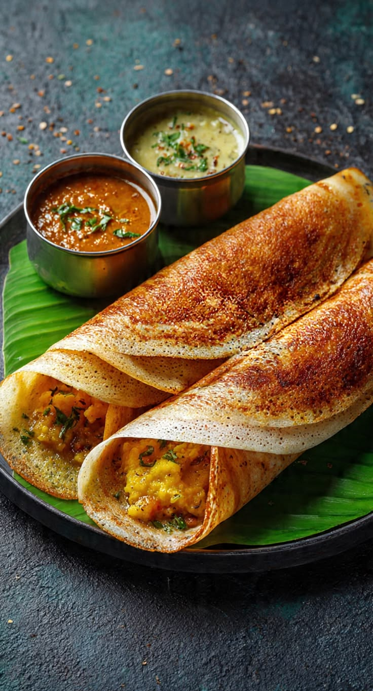

Crispy Masala Dosa Recipe
yah dakshin bharat ka ek bahut hi lokpriya aur paramparik vyanjan hai. chawal aur udad daal ke khameer uthaye hue ghol se bane is patle aur kurkure dose mein masaledar aalu ka mishran (masala) bhara hota hai. ise aam taur par nariyal ki chatni aur swadisht sambhar ke saath garma-garam parosa jata hai.
Preparation time
- Total: Approx. 30 minutes (with ready batter)
- Preparation: 15 minutes
- Cooking: 15 minutes
Ingredients
- 3 cups fermented dosa batter
- 3 medium-sized boiled potatoes
- 1 finely chopped onion and 2 green chillies
- Mustard seeds, curry leaves, and turmeric powder (for tempering)
- Oil or butter (for cooking)
- Salt to taste
Instructions
- Prepare the potato stuffing: ek pan mein tel garam karen, usme rai, kari patta, hari mirch aur pyaz dalen. pyaz ke pardarshi hone tak bhunen, phir haldi, mash kiye hue aalu aur namak daalkar acchi tarah milayen aur 3-4 minute tak pakaen.
- Heat the griddle: madhyam aanch par ek non-stic dosa tawa garam karen. taapmaan jaanchne ke liye pani ki kuch bunden chhidaken aur ise saaf kapde se ponchh len..
- Spread the batter: tave ke beech mein ek kalchi bhar ghol dalen. kalchi ke pichle hisse ka istemaal karte hue, ghol ko dhire-dhire gol ghumate hue bahar ki taraf failayen taki ek patla dosa ya crape ban jaye.
- Cook until crispy: kinaron aur beech mein thoda tel ya makkhan dalen. tab tak pakayen jab tak nichli parat sunhari bhuri aur kurkuri na ho jaye
- Add the stuffing: taiyar aalu masala ka ek hissa dosa ke beech mein rakhen.
- Fold and serve: dose ke sathiyon ko stuffing ke upar mascara roll bana len. ise tave se shuru karen aur garma- garam sambhar aur lalach ke saath turant shuru karen.
Nutrition
neeche di gai table mein bina atirikt makkhan ya chatni wale ek standard masala dosa ki nutritional value (poshak tatv) dikhai gai han.:
| Calories |
287 kcal |
| Carbs |
44g |
| Protein |
6g |
| Fat |
9g |